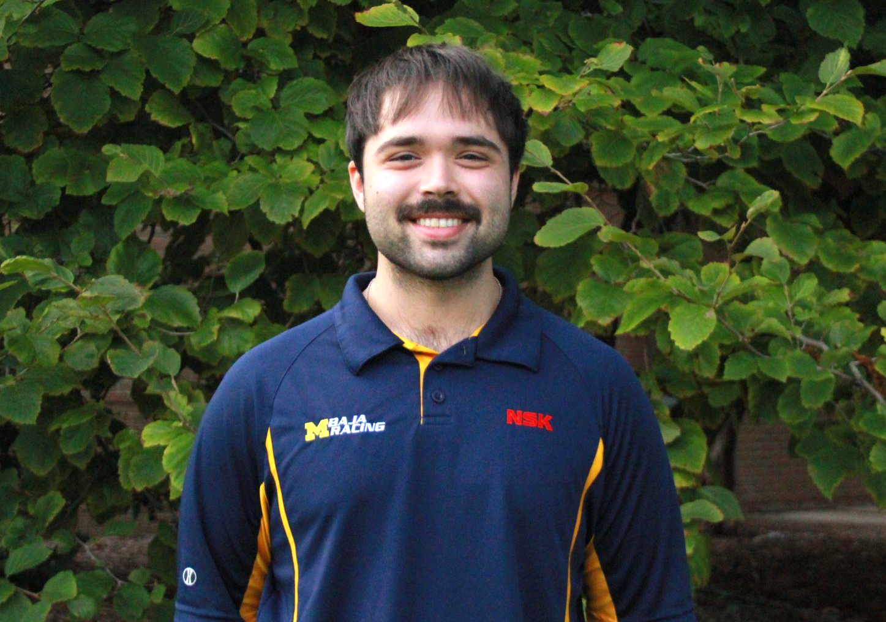

Hi, I’m Mehmet.
Here’s what I’m working on.
I’m a senior studying mechanical engineering at the University of Michigan. I spend much of my time working on Baja race cars, designing, making and testing parts. This is a collection of projects I’ve enjoyed working on and what I’ve learned along the way.

Personal and Team Projects
A few projects from classes, research, Baja Racing, and internships.
I like seeing ideas
come together.
Whatever I am working on, the part I enjoy most is understanding why something behaves the way it does.
I'm particularly drawn to teams where engineering happens across CAD, simulation, the workshop, and testing - and where it’s normal to revisit an idea once the data tells you something new!
What I've worked with
Along the way.
Industry, student-team leadership, and hands-on research.
WSP USA
Mechanical Engineering Intern · Commissioning - Building system field visits, functional testing and documentation across 8+ projects.
Michigan Baja Racing
Vehicle Simulations Lead - Vehicle dynamics, modeling, CFD, testing and cross-subteam development; previously composites and ergonomics.
Orca Workshop
CAD Designer / Design Intern - Mechanical design, reverse engineering, prototyping and additive manufacturing.
Experimental mechanics
Led experimental work on tensile failure in FDM-printed PLA; manuscript currently under peer review.
Thanks for
stopping by.
I’m graduating in May 2027 and looking for full-time mechanical engineering roles in design, testing, vehicle systems, and product development. Feel free to reach out.
A quick overview.
My resume is here for easy reference. You can also open the PDF separately.
Add Mehmet_Osar_Resume.pdf to the assets folder to show your resume here.